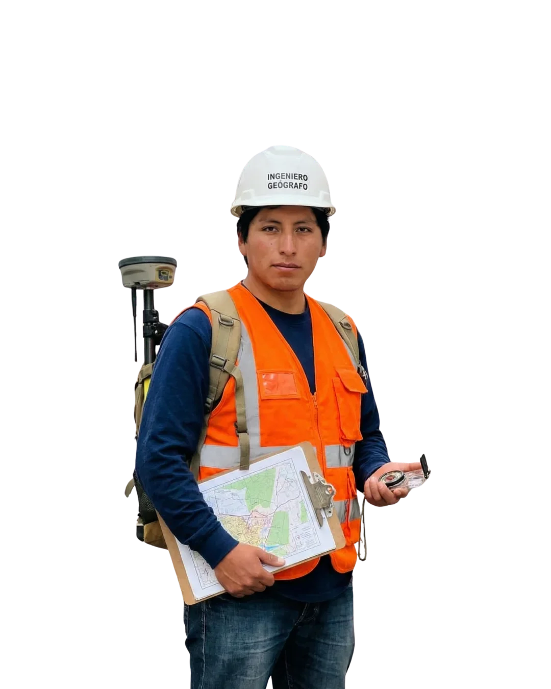
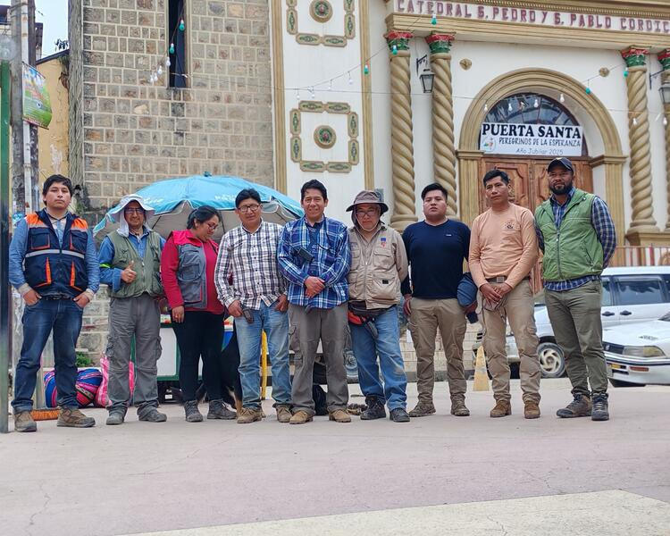
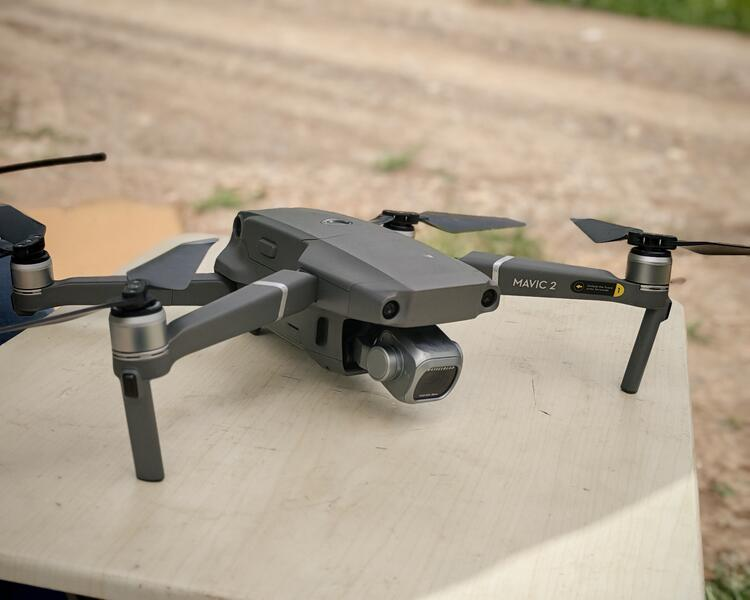
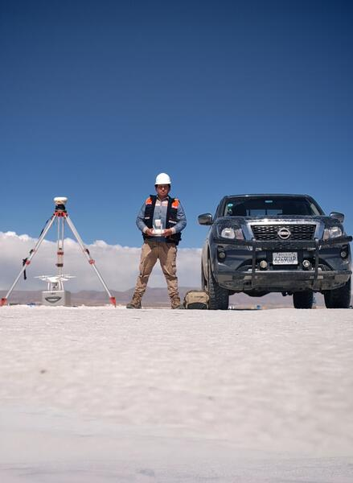
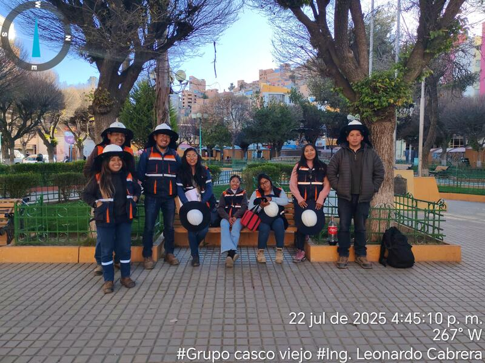
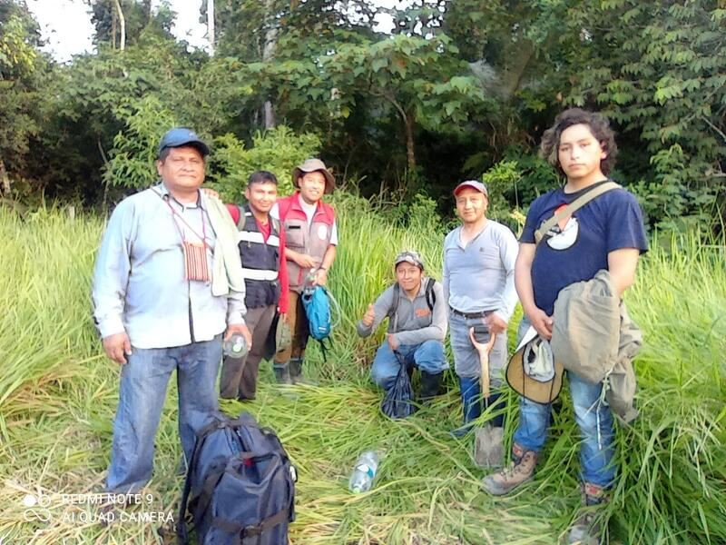
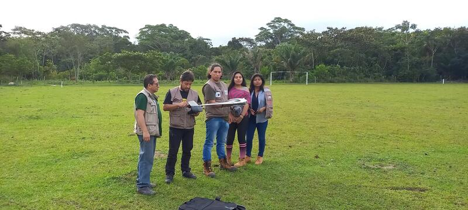
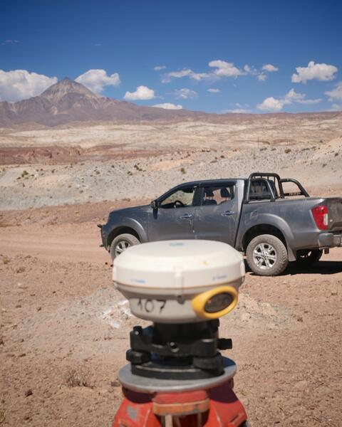
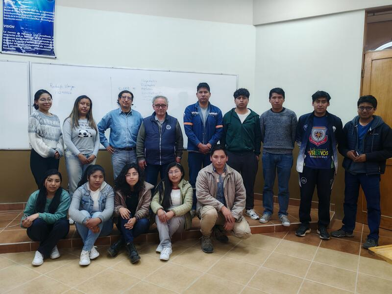
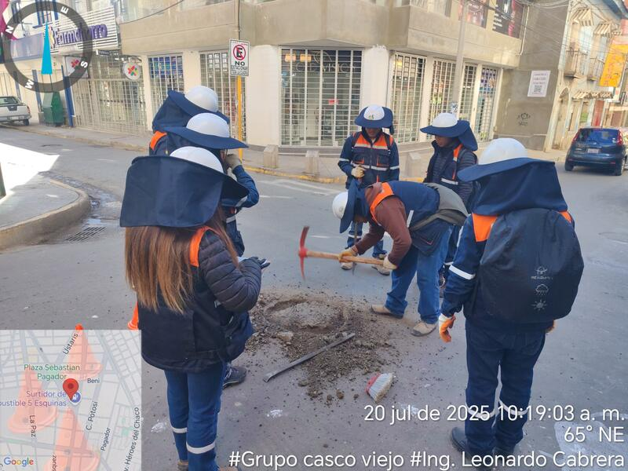

Especialista en análisis espacial, teledetección, sistemas de información geográfica y desarrollo de aplicaciones web. Transformando datos geoespaciales en soluciones innovadoras desde el altiplano hasta el llano boliviano.

Soy John Leonardo Cabrera Espíndola, Ingeniero Geógrafo desde El Alto, Bolivia. Mi pasión radica en descifrar los patrones ocultos de nuestro territorio andino. Combino el rigor científico con la innovación tecnológica para crear soluciones que impactan positivamente en la planificación territorial y la gestión ambiental.
Mi experiencia abarca desde el análisis de imágenes satelitales de los glaciares andinos hasta el desarrollo de modelos predictivos para la gestión de riesgos en zonas de montaña. Además, desarrollo aplicaciones web interactivas para herramientas académicas, sistemas de gestión y análisis geoespacial.
Procesamiento y análisis de imágenes satelitales multiespectrales e hiperespectrales para detección de cambios y monitoreo ambiental en los Andes.
Desarrollo de sistemas de información geográfica, análisis espacial avanzado y producción cartográfica de alta precisión para diversos proyectos.
Vuelos con drones DJI Phantom y Mavic para fotogrametría, generación de modelos digitales del terreno y ortomosaicos.
Creación de aplicaciones web interactivas, sistemas de gestión, herramientas académicas y plataformas de análisis geoespacial en línea.
Geoestadística, interpolación espacial, modelado predictivo y visualización de datos para la toma de decisiones territoriales.
Levantamientos topográficos de precisión, procesamiento de datos GNSS y control geodésico para proyectos de ingeniería y minería.
Registro fotográfico de proyectos realizados en distintas regiones de Bolivia — desde vuelos con drones hasta relevamientos topográficos en campo.









Aplicaciones web desarrolladas con HTML5, CSS3, JavaScript, Leaflet y Three.js — desde herramientas académicas de ingeniería geográfica hasta sistemas completos de gestión comercial. Cada proyecto es funcional, responsivo y accesible en línea.
Laboratorio de análisis raster con interpolación espacial (IDW, Kriging, TIN), visualización 3D del terreno y comparación de métodos geoestadísticos. Herramienta interactiva para investigación satelital.
Herramienta académica interactiva para comprender el sistema de proyecciones cartográficas. Visualización dinámica de diferentes tipos de proyección sobre el globo terráqueo.
Herramienta educativa sobre curvas de nivel en topografía. Ayuda a estudiantes de ingeniería a comprender la representación del relieve.
Plataforma educativa para entender operaciones de álgebra de mapas en SIG. Operaciones raster, combinación de capas y análisis espacial.
Sistema POS completo para punto de venta de comida rápida. Control de órdenes, estadísticas de ventas, reportes diarios y exportación CSV.
Plataforma de gestión y venta de boletos para empresas de transporte terrestre. Control de flotas, rutas y reservas.
Sistema especializado de venta de boletos de viaje para la empresa Surubí. Gestión de pasajeros, rutas y emisión de tickets.
Sistema integral de control médico veterinario. Registro de pacientes, historial clínico, vacunas, tratamientos y citas.
Página de presentación para los vendedores del estudio de Vichaya. Catálogo de productos, información comercial y contacto directo.
Sistema de gestión para recepción de hotel. Check-in/check-out, disponibilidad de habitaciones, reservas y registro de huéspedes.
Sistema de control de asistencia para instituciones educativas. Registro de estudiantes, reportes de asistencia y seguimiento.
Sistema de control para tienda de disfraces. Inventario, alquiler, disponibilidad de trajes y gestión de clientes.
Mapa interactivo de las elecciones generales de Bolivia 2025. Visualización geoespacial de datos electorales por región y departamento.
Sistema de control electoral para el partido político Innovación Humana. Registro de delegados, formularios y seguimiento del proceso electoral.
Plataforma de control electoral para ciudadanos. Verificación de votos, seguimiento de resultados y transparencia del proceso democrático.
Desde El Alto, he tenido el privilegio de trabajar en diversos ecosistemas bolivianos, desde el altiplano hasta la Amazonía, contribuyendo a proyectos de conservación, desarrollo minero y gestión de riesgos naturales.
Instituto Geográfico Militar - Bolivia
Liderazgo en proyectos de cartografía nacional, implementación de infraestructura de datos espaciales y capacitación técnica.
Autoridad de Bosques y Tierra (ABT)
Procesamiento de imágenes satelitales para monitoreo de deforestación, desarrollo de alertas tempranas de cambio de uso de suelo.
SERGEOTECMIN
Ejecución de levantamientos geológicos-mineros, procesamiento de datos GNSS y elaboración de mapas temáticos de recursos minerales.
Siempre estoy interesado en nuevos proyectos que involucren análisis espacial, cartografía innovadora, desarrollo web o soluciones geotecnológicas en Bolivia.